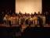
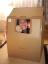

2008年3月3日 19時27分撮影
ばぁちゃん手作りのチラシ寿司。
作り方＆ばぁちゃんの味を良く覚えておいてね、ユッコ！2008年2月11日 14時01分撮影
毎年恒例になっている「カニ旅行」。出石市での休憩タイム。2008年1月5日 12時45分撮影
クラバー３になるとゴンドラに乗れます。めざせ、クラバー３を！
2008年1月4日 16時50分撮影
スキースクールの表彰式。由起子は「クラバー２」で頑張りました！2008年1月2日 19時19分撮影
クラブメッドサホロ／パパの誕生日をスタッフの方々が祝ってくれました2008年1月1日 11時58分撮影
初詣は氏神さんの「等彌神社」へ。従兄弟の享平君と。2007年12月24日 10時37分撮影
早朝出発で行った「信州／ヘブンス園原」への日帰りスキー。
お天気も良く、人も少なく、存分に滑れました。2007年12月2日 8時46分撮影
休日、朝のウォーキングで等爾神社に立ち寄りました。
紅葉が楽しめます。2007年12月1日 21時19分撮影
ロイズのアドベントカレンダー。今年我が家は毎朝これを楽しみました。
一番早く起きた人が小窓を開けれるのです。そして出てきたお菓子は
３等分にして分け合うのです。開ける役目は由起子が一番多かったよね。
2007年11月25日 12時16分撮影
大好きなダンボールで作った「クルマ」。ちゃーんとハンドルも
付いているんだって。工作にはホント集中するよなぁ～。
その集中力とやる気を勉強でも見せてくれい･･･。